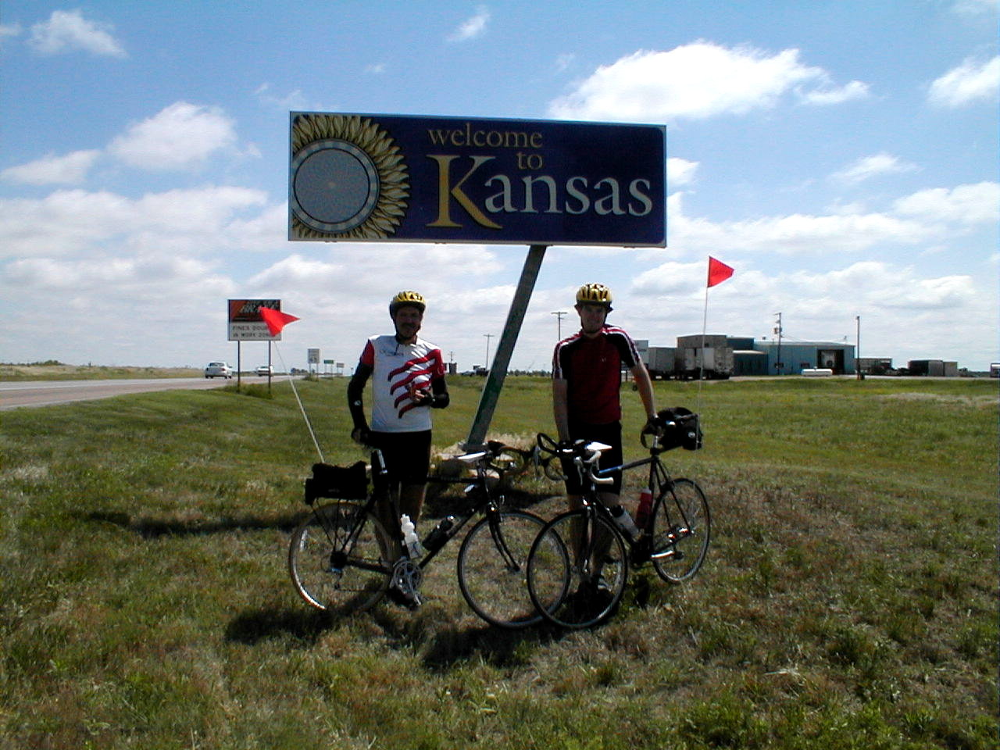

Day 19: May 31, Guymon, OK to Liberal, KSPrevious Day - Home - Next Day Photo of the DayDad and I at the Kansas state line, state #6! Keegan's LogDay 19: May 31, Guymon, OK to Liberal, KS Mileage: 41.62 milesWeather: Cool, Partly cloudy, Headwinds Vertical Climb: 300 feet Riding Time: 3:00 Today we got to sleep in an extra hour, a welcome break in the daily routine. Breakfast was again at Caktus Jack's, they did an excellent job considering they don't normally open for breakfast. The route was very easy, only 40 miles and almost no climbing. Unfortunately the air all around us was in a big hurry to move south, it seems the air in this part of the country is migratory. Progress was slow, but the fact that the winds were at an angle meant we didn't have quite as much wind in our faces as we did yesterday. The first sag was at a truck stop in Hooker, Oklahoma, we passed by the Chamber of Commerce which had some interesting T-shirts and postcards for sale. We were in a bit of a rush to catch our plane on time, so we were one of the first groups to arrive at the sag and wasted little time before leaving. From there it was about 15 miles to the state line, it didn't take much longer than an hour to cover that ground. A few photos, a sprinkling of sand, and we were again on our way, Liberal only a short distance off on the horizon. We road the last few miles on the official 'Yellow Brick Road' (which was neither yellow nor brick), Liberal claims to be the land of Oz, as well as the pancake capital of the world. We got to the hotel at 11:55, probably the only time we'll ever finish before noon, and Tracy was generous enough to let us use her shower, we have no reservations for the next two nights. At 1:00 Tracy drove us to the airport terminal and dropped us off, less than a minute later we were already being rebooked, the plane was running late. The tiny Beechcraft took us to Dodge City before leaving us in Denver, we then caught a direct flight to Indy and made it a little before 10:00. On the flight from Denver to Indy there was a guy that was going to propose when he got off the plane, he gave each of us a carnation, we gave them to Angie when we got off the plane, and he came off last with a dozen roses. The whole plane stuck around for the show, she said yes by the way. We feel bad about missing two days of the tour, up to this point I had ridden every inch of the way, but the two days of rest will be wonderful too. We would never miss Lauren's Graduation either, it's a big day for her, time to start school all over again. I'll be sure to put the graduation pictures up tonight... Phil's LogThere was a time when a 40 mile bike ride was a lot. This was an easy day, really again because God put the rives where He did, and the motels followed in the towns that resulted. We saw our first oil well (not pumping), saw a lot of raangeland, and smelled one more feed-lot. Of course, we had headwinds but they were moderate. And we crosed from Oklahoma to Kansas and did the obligatory dropping of a sprinkle, "sprinkle & tinkle:, of Manhattn Beach sand on the state line. It was an esy day. On my short visit home for Lauren's graduation, I have quite a list of bicycle stuff to chase. Not many bicycle stores have chosen to locate in this part of the country, pick-up truck dealers being more in demand. |
{kind=link}